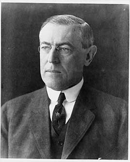

This presidency falls in the realignment era (1896–1932), when the two parties were trading positions and both had progressive and conservative wings.
A former Princeton president and New Jersey governor. He created the Federal Reserve, signed the first income tax under the new 16th Amendment, the Clayton Antitrust Act and the Federal Trade Commission, and took the U.S. into World War I in 1917. His plan for a League of Nations was rejected by the Senate. He also segregated federal offices and jailed critics of the war. A 1919 stroke left him disabled, which was hidden from the public.
Shaded areas show the years in office, with a few years before and after for comparison. Budget years ran July to June until 1976 (now October to September), so each year's figures cover parts of two calendar years.
June 30, 1912 (end of fiscal 1912): $2.87 billion → June 30, 1920 (end of fiscal 1920): $25.95 billion
Daily debt figures don't exist before 1993, so Wilson's numbers use the fiscal years closest to his terms, the same rule as every other page. World War I borrowing drove the rise; the debt peaked at $27.4 billion in June 1919.
Debt as a share of GDP. Above 100% means the debt is bigger than a year of everything the country produces.
Money borrowed each budget year (below the line) or paid down (above).
1913: 4.4% → 1920: 4.0%. Yearly averages; monthly figures begin in 1948. Estimates by economist Stanley Lebergott (NBER, 1957).
How much prices rose each year (consumer price index).
What everyday prices and paychecks did while in office.
Prices use the consumer price index (MeasuringWorth). The minimum wage is the federal rate set by Congress.
1,803 orders. Count from the American Presidency Project.
Yearly counts aren't reliable for this era. Orders were not numbered until 1907, when the State Department numbered the ones already in its files, and many orders were never numbered at all, so only the total is shown.
Source: American Presidency Project: executive orders (full list of every order).
Created the government's wartime propaganda agency, run by journalist George Creel, which also issued voluntary censorship rules for the press.
Federal RegisterIncomplete: orders before 1929 were not numbered or collected consistently. This archive has 150 of the roughly 1,803 orders counted for this president.
Source: Executive Orders Archive, compiled from the American Presidency Project and the Federal Register. Topics are the archive's automated tags; "Revoked" and similar labels come from the Federal Register's records.
A pardon wipes out the punishment for a federal crime; a commutation shortens a sentence but leaves the conviction. Counts are by federal fiscal year (July to June). The Justice Department counts fiscal 1913, including Wilson's first four months, under Taft, and all of fiscal 1921, including Harding's first four months, under Wilson.
Source: U.S. Dept. of Justice, clemency statistics, which lists every recipient with the crime and sentence.
The crime: None charged: the New York Tribune editor refused to tell a grand jury his sources for a story on customs fraud
Sentence: None
Why it drew attention: Wilson offered a pardon in advance to force him to testify. Burdick refused it, and the Supreme Court ruled in 1915 that a pardon can be turned down because accepting one implies guilt.
SourceThe same checklist for every president. Tap a row for details and sources.
No articles of impeachment were voted on.
Never charged.
No member of his cabinet or White House staff was convicted.
None were appointed.
During the Palmer Raids (1919–20), the Justice Department and Bureau of Investigation arrested thousands of suspected radicals, many without warrants. A 1920 report by twelve prominent lawyers documented illegal searches, arrests and abuse. The Post Office also barred antiwar publications from the mail.
SourceNo one in the administration was charged or formally penalized.
What happened, what was proven, and how it ended.
His cabinet segregated offices, lunchrooms and restrooms in the Treasury and Post Office departments, and many Black civil servants were demoted or fired.
Outcome: Wilson defended the policy to Black leaders in 1914. Princeton removed his name from its public policy school in 2020.
SourceAbout 2,000 people were prosecuted under the Espionage and Sedition Acts, including Socialist leader Eugene Debs, sentenced to ten years for an antiwar speech.
Outcome: The Supreme Court upheld the convictions in 1919; the Sedition Act was repealed in 1920; Harding freed Debs in 1921.
SourceAfter a wave of anarchist bombings, Attorney General A. Mitchell Palmer ordered raids that arrested thousands of immigrants and suspected radicals; 556 were deported.
Outcome: A Labor Department official canceled most of the deportation orders; the raids were widely condemned by 1920.
SourceA severe stroke left Wilson partly paralyzed. His wife, Edith, and his doctor controlled who could see him and what papers reached him; the public and most of the cabinet were not told how sick he was.
Outcome: The episode was one reason for the 25th Amendment (1967), which sets rules for presidential disability.
SourceWidely quoted remarks, with the context they were said in.
The world must be made safe for democracy.
There is such a thing as a man being too proud to fight.
Segregation is not a humiliation but a benefit, and ought to be so regarded by you gentlemen.